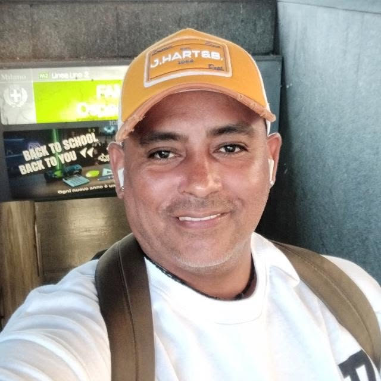

PERFIL DEL ESTUDIANTE
Datos del estudiante

Mi nombre es Luis Gustavo MA
Mi edad : 21 años
Mi carrera: Desarrollo de Software
ciclo o semestre: I
Instituto: Certus
Ciudad o lugar de procedencia: Moquegua
FORMACIÓN ACADÉMICA
- Estudios Escolares : Culminados
- Estudios Técnicos: En Proceso
- Estudios Universitarios: Incompletos
- Cursos: Ofimática e Idiomas
- Certificaciones: Microsoft Certified Azure Developer Associate
TABLA DE ESTUDIOS
| Nivel Educativo | Institución | Año | Estado | Escolares | Jose Carlos Mariátegui | 2021 | Terminado |
| Tecnicos | En proceso | 2026 | En proceso |
| Universitarios | UNJBG | 2023 | Incompletos |
| Cursos | Varios lugares | 2022 | Terminado |
| Certificaciones | Varios Lugares | 2021 | Terminado |
Lista de conocimientos
- Microsoft Excel- Marketing Digital
- Autocad
Lista de Habilidades
- Liderazgo
- Responsabilidad
Perfil
Soy Luis un joven de 21 años de edad, que actualmente está estudiando
Desarrollo de Softaware en CERTUS, mis intereses son plenamente acabar
la carrera y ser alguien con un buen trabajo en el futuro, poseo conocimientos
básicos de algunos temas como tecnologia, matemáticas, cultura general etc.
Mis objetivos profesionales son ascender a un buen puesto, convertirme en un lider
y sobre todo trabajar en equipo .Lo que pienso lograr en el futuro es mejorar mi
empleabilidad , tener un crecimiento salarial y especializarme en algo